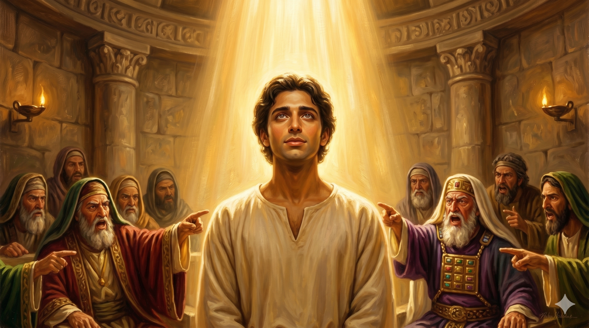

공회 앞에서 거짓 증인들에 둘러싸인 스데반 — 그 얼굴에는 두려움이 아니라 천사 같은 평안이 가득했다. 빛이 쏟아지는 공회당, 고발하는 손가락들 가운데 홀로 고요히 서 있는 한 사람
"이에 사람들을 매수하여 말하되 이 사람이 모세와 하나님을 모독하는 말을 하는 것을 우리가 들었노라 하게 하고 백성과 장로들과 서기관들을 충동시켜 와서 잡아 가지고 공회에 이르러 거짓 증인들을 세우니 이르되 이 사람이 이 거룩한 곳과 율법을 거슬러 말하기를 마지 아니하더라 하며 … 공회 중에 앉은 사람들이 다 스데반을 주목하여 보니 그 얼굴이 천사의 얼굴과 같더라" — 사도행전 6:11-15
스데반의 지혜와 성령의 능력을 당해낼 수 없었던 자들은 정면 대결 대신 다른 방법을 택했습니다. 사람들을 매수하여 거짓 증언을 꾸몄고, 군중을 선동해 그를 공회로 끌고 갔습니다. 이것은 수십 년 전 예수님이 걸어가셨던 바로 그 길이었습니다. 거짓 증인, 공회 앞의 재판, 사형 선고로 이어지는 이 패턴을 누가는 의도적으로 반복합니다. 스데반은 단순히 박해받는 한 사람이 아니라, 고난받으신 주님의 길을 따르는 제자의 전형적인 모습이었습니다.
그러나 이 긴박한 장면에서 누가가 마지막으로 기록한 것은 충격적입니다. "그 얼굴이 천사의 얼굴과 같더라." 거짓 고소를 받고, 모든 눈이 자신을 향해 증오로 가득 찬 그 순간에, 스데반의 얼굴에는 두려움이 아니라 빛이 있었습니다. 이것은 강한 의지력의 결과가 아닙니다. 성령으로 충만한 사람 안에서 흘러나오는 초자연적인 평안입니다. 하나님이 함께하실 때, 그 임재의 빛이 얼굴에 나타나는 것입니다. 모세가 시내산에서 내려올 때 빛났던 그 얼굴처럼 말입니다.

분노한 고발자들의 손가락 사이, 평온하게 빛나는 얼굴 — 성령의 임재가 두려움을 평안으로 바꾼다
부당하게 오해받고 거짓으로 고소당하는 경험은 우리 삶에서도 일어납니다. 직장에서, 가정에서, 때로는 교회에서도 진실이 왜곡되고 자신이 억울하게 몰리는 순간이 있습니다. 그때 우리의 얼굴에 무엇이 나타납니까? 스데반의 평안은 '그래도 괜찮다'는 자기 위안에서 온 것이 아닙니다. 그것은 하나님이 이 상황을 보고 계신다는 믿음, 그분의 손 안에 있다는 확신에서 온 것입니다. 억울함을 하나님 앞에 내어놓을 때, 우리는 그 얼굴을 흘겨보는 원수 앞에서도 평안할 수 있습니다.
"천사의 얼굴"은 우리 힘으로 만들 수 없습니다. 그것은 성령이 우리 안에서 역사하실 때 자연스럽게 드러나는 것입니다. 날마다 성령으로 충만하기를 구하십시오. 그리하면 가장 어렵고 억울한 자리에서도 하나님의 임재가 얼굴에 나타날 것입니다. 사람들이 당신을 고발하러 왔다가, 오히려 당신의 얼굴에서 무언가를 보게 되는 역사가 일어날 것입니다.
거짓 증인들이 둘러쌌지만, 그의 얼굴은 천사와 같았습니다.
억울함은 하나님께 맡기고, 평안은 성령께 구하십시오.
당신의 얼굴이 오늘 누군가에게 하나님의 임재를 보여줄 수 있습니다.